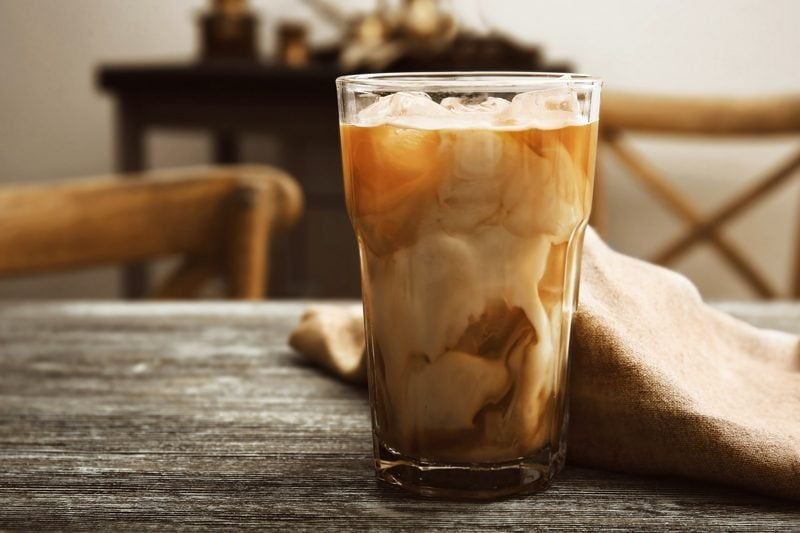

Iced Coconut Vanilla Latte
– vegan, raw, gluten-free, nut-free –
Not too long ago I published a post on cold-pressed coffee, and it has pretty much become a staple in my house. It has really opened the doors to my desires to play around and create new drinks. I will admit that if I allowed myself to… I could become highly addicted to those fancy dancy coffee drinks.

I have had a few in the past years and boy, is it a slippery slope! It’s something that I have always wanted to avoid. I try to use organic and fair-trade coffee. Drinking cold-pressed coffee, for me, is a treat that I will allow myself and it has up to 75% less acid, which makes me feel even better about my choice in having it.
Now comes the fun part though! Watch out over-priced Starbucks coffee shops; there is a new up and coming barista in town! I may not be able to make pretty pictures in my mugs just yet, but give me time, allow me some room to experiment and I just might be able to create some latte art yet. Never to old to learn new tricks.
It doesn’t take fancy art to make it taste good, so that’s a relief. Today’s drink was a last-minute creation as Mom and I were heading out the door. The poor woman, every time she comes to visit I get so excited to catch her up on all the new treats that I am creating. I hope you enjoy this special treat. Blessings, amie sue
 Ingredients:
Ingredients:
Preparation:
- Combine all of the ingredients, including the ice, place the lid on tightly and give it a good shake. Ta-da! That’s it. Not complicated at all.
- You can always double the measurements for a full glass… regardless of what you do, be prepared to ooh and aaaah over the cool swirls that the coconut milk creates as you pour it in.
© AmieSue.com